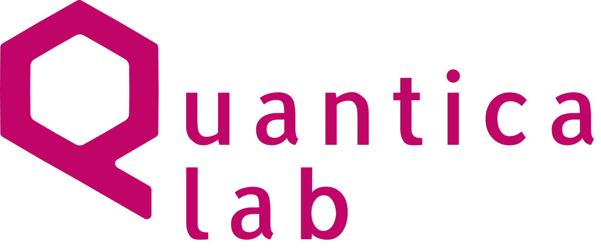

Quantica Lab
AI dla
organizacji
Odpowiedzialne i skuteczne wdrażanie sztucznej inteligencji — od opracowania strategii po realne efekty operacyjne.

Łączymy badania
z praktyką wdrożeniową
Quantica Lab wspiera organizacje w odpowiedzialnym i skutecznym wdrażaniu sztucznej inteligencji — od opracowania strategii po realne efekty operacyjne.
Nasz zespół łączy doświadczenie badawczo-rozwojowe w obszarze AI z ponad 15-letnią praktyką we wdrażaniu technologii w dużych organizacjach.
Tworzymy rozwiązania dopasowane do specyfiki branży, procesów i wymogów regulacyjnych organizacji, w których je wdrażamy.
Wdrażamy
rozwiązania AI
Projektujemy i wdrażamy systemy, które skracają czas pracy z dokumentami, automatyzują powtarzalne czynności i usprawniają przepływ informacji w organizacji.
Tworzymy rozwiązania dopasowane do specyfiki branży, procesów i wymogów regulacyjnych — tak, aby AI stała się trwałym elementem codziennej pracy, a nie jednorazowym pilotażem.
Systemy RAG
i agenci AI
Systemy RAG
Retrieval-Augmented Generation. Systemy AI umożliwiające bezpieczne wykorzystanie wewnętrznych repozytoriów dokumentów, procedur czy aktów prawnych poprzez kontekstowe wyszukiwanie i generowanie odpowiedzi.
Automatyzacja procesów i agenci AI
Systemy AI analizujące dokumenty, klasyfikujące sprawy i wspierające obsługę wniosków. Powtarzalne czynności przechodzą w ręce agentów, a zespoły zyskują czas na zadania wymagające oceny i decyzji.
Adaptacja modeli
i architektura danych
Adaptacja modeli językowych (LLM)
Dostosowanie modeli AI do specjalistycznych zadań, terminologii branżowej, stylu komunikacji oraz wymogów regulacyjnych organizacji.
Architektura i analityka danych
Integracja rozproszonych źródeł informacji i przygotowanie ich do wykorzystania w systemach analitycznych oraz AI — fundament, bez którego żadne wdrożenie nie przetrwa fazy pilotażu.
Gdzie AI pracuje,
co zmienia
Zastosowania
- Asystenci wiedzy dla pracowników
- Chatboty dla klientów i obywateli
- Wsparcie procesów regulacyjnych i kontrolnych
Korzyści
- Ograniczenie pracy manualnej
- Szybsza obsługa spraw
- Większa spójność komunikacji i procesów
Projektujemy fundament
transformacji AI
Strategie AI i danych
Opracowujemy strategie AI i zarządzania danymi spójne z celami organizacji.
Architektura i governance
Projektujemy architekturę systemów i model AI governance.
Zgodność i bezpieczeństwo
Zapewniamy zgodność regulacyjną i bezpieczeństwo przetwarzania.
Integracja
Integrujemy rozwiązania z istniejącą infrastrukturą organizacji.
Łączymy perspektywę zarządczą z technologiczną, aby inwestycje w AI były spójne z celami biznesowymi i publicznymi.
Budujemy
kompetencje AI
Wspieramy organizacje w budowie wewnętrznych kompetencji AI, aby wdrożenia były trwałe i świadomie zarządzane.
Łączymy wiedzę technologiczną z realnymi procesami organizacji, pomagając zespołom przejść od teorii do praktycznego zastosowania AI w codziennej pracy.
Co prowadzimy
- Szkolenia wprowadzające dla całej organizacji
- Warsztaty strategiczne dla zarządów i kadry kierowniczej
- Warsztaty operacyjne identyfikujące i priorytetyzujące projekty AI
Organizacje,
które myślą długofalowo
Procesy dokumentowe
Organizacje, których procesy bazują na pracy z dokumentami i informacją.
Zarządy i liderzy
Liderzy, którzy chcą wdrażać AI strategicznie, a nie punktowo.
Sektor publiczny
Administracja publiczna i infrastruktura krytyczna.
Niezależność technologiczna
Organizacje rozwijające własne kompetencje i niezależność technologiczną.
AI, która staje się
częścią organizacji
Działamy kompleksowo — od opracowania strategii i architektury danych, przez projektowanie i wdrożenie rozwiązań AI, po rozwój kompetencji wewnętrznych.
Tworzymy systemy, które sprawdzają się w praktyce i stają się częścią codziennych procesów organizacji.
- Strategia, architektura i wdrożenie w jednym zespole
- Polski LLM i głęboka adaptacja do branży
- Kompetencje wewnętrzne, które zostają w organizacji
Quantica Lab
Quanticalab Sp. z o.o.
kontakt@quanticalab.ai
www.quanticalab.ai
Napisz do nas